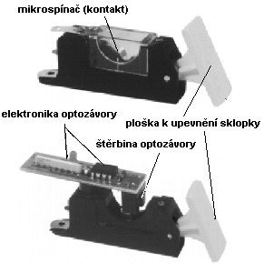
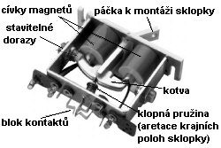
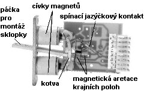
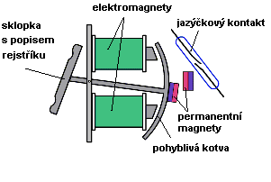

Rejstříková elektrická traktura je obdobně jako tónová traktura systém prvků (spínačů, vodičů, elektromagnetů), sloužící k přenosu změny polohy ovladače rejstříku (tahélka, sklopky...) v hracím stole na odpovídající akci ve vzdušnici (přesunutí zásuvky, otevření rejstříkového ventilu). Na počátku traktury je opět spínač (kontaktní či bezkontaktní), spínaný pohybem rejstříkového ovladače. Konstrukcí tohoto spínače je více, jeho funkce je ale vždy stejná – uzavření elektrického obvodu. V uzavřeném obvodu začne proudit elektrický proud a ten, třeba i na velkou vzdálenost na opačném konci traktury zapůsobí na akční člen, např. elektromagnet či servomotor a ten provede činnost nutnou k zapnutí rejstříku ve vzdušnici. Součástí elektrické rejstříkové traktury může být velký počet pomocných zařízení (paměťových volných kombinací, kolektivů, crescendo). Je to dáno tím, že konstrukce těchto zařízení z elektrických komponentů je o mnoho jednodušší a spolehlivější, než u ostatních druhů traktur (dnes, kdy je hrací stůl propojen s nástrojem optickým kabelem a přenos impulsů na cestě hrací stůl – skříň nástroje je kódován počítači, vybudování pomocných zařízení typu spojek či kombinací je v podstatě „jen“ záležitostí úpravy na úrovni software). Konstrukcí rejstříkového ovládače v hracím stole je několik, nejrozšířenější je ale provedení ve formě sklopky (překlápěného spínače s dvěmi stabilními polohami). Sklopka obsahuje popis ovládaného rejstříku, dnes často i s podsvětlením (mnohdy barevným, usnadňujícím varhaníkovi orientaci v množství ovládačů signalizací některých stavů, např. ruční rejstřík, kombinace, vypnutý – zablokovaný rejstřík apod.). |
|  | Sklopka je konstrukčně spojena se spínačem, který v nejjednodušším případě vede přímo k elektromagnetu ve vzdušnici. V současné době používané sklopky mají vestavěno spínačů několik pro různé, navzájem nezávislé a oddělené obvody (především volné kombinace). Na obrázku je provedení mechanismu sklopky se dvěmi variantami spínání - nahoře s kontaktem ve formě mikrospínače (mžikový pérový kontakt), dole s bezkontaktním spínačem s optozávorou. |
Animace ukazuje
princip funkce nejjednodušší sklopky s pérovými kontakty. Pružina (modrá)
udržuje sklopku ve dvou stabilních krajních polohách (přitlačuje páčku
sklopky na dorazy). Jakákoliv jiná poloha je labilní, sklopka se z ní
vrátí do některé z krajních poloh. Sepnutím kontaktů se uzavře elektrický
obvod a předá povel o registraci dále do traktury. |
|
|  | Sklopku lze ovládat ručně nebo elektricky pomocí magnetů. V krajních polohách je sklopka držena překlápěnou pružinou. Při zapnutí naprogramované kombinace se sklopky automaticky překlopí do naprogramované polohy a varhaník tak má přehled o zapnutých rejstřících v té nejnázornější podobě. |
Jiné provedení mechanismu sklopky je na tomto obrázku. Princip je obdobný, otevřený kontakt je nahrazen jazýčkovým kontaktem (párem pružných jazýčků zatavených ve skleněné trubičce, která se spíná přiblížením magnetu) a aretace krajních poloh je zajištěna pomocí dvojice navzájem se odpuzujících permanentních magnetů. Na následujícím obrázku je popis jednotlivých částí a na animaci znázorněna sklopka v činnosti:
|
 |
|  | |
Na animaci jsou vidět obě možnosti ovládání sklopky - ruční (červené šipky) a elektromagnetická (pomocí vestavěných elektromagnetů). Obě možnosti jsou rovnocenné a podle způsobu nastavení logiky ovládání na sobě do určité míry nezávislé -zapnutí naprogramované kombinace může mít prioritu tj. ruší nastavení sklopek provedené předtím ručně nebo nastavení zachová a jen přidá předprogramované rejstříky. Různé může být i chování po vypnutí kombinace - buďto návrat k předchozímu nastavení (pak si elektronika registrace musí před zapnutím kombinace zapamatovat aktuální nastavení ručních rejstříků) nebo přechod do vypnutého stavu. Každá sklopka na hracím stole má svůj mechanismus s dvojicí elektromagnetů, u větších varhan tak jejich počet dosahuje mnoha desítek. Pohled do hracího stolu na blok sklopek zezadu ukazuje následující obrázek: |
Na opačném konci traktury než je řídicí prvek se nachází akční člen, který vykoná příslušnou práci. U elektrické traktury se jako akční členy používají téměř výhradně elektromagnety různého provedení. Pro některé činnosti, na něž by magnety nepostačovaly nebo byly potřeba ve značně výkonném provedení (např. pohyb zásuvek u „velkých“ rejstříků, pohyb po dlouhé dráze, plynule řízený pohyb žaluzií apod.) se používají i servomotory (pomaluběžný stejnosměrný nebo krokový motor, někdy s vestavěnou převodovkou nebo převodem na lineární pohyb pomocí kuličkového šroubu…). Pro ovládání rejstříkových ventilů u kuželkových vzdušnic se používají nejčastěji páčkové elektromagnety. Oproti obdobným magnetům v tónové traktuře jsou jen o poznání větší a výkonnější, neboť rejstříkový ventil je podstatně větší, hmotnější a působí na něj vzduch stlačený v kancele větším odporem, takže při jeho otevírání je třeba vyvinout větší sílu. Tam, kde by elektromagnet musel být příliš velký, může se použít i kombinace s míškem (viz kombinovaná traktura), kde těžkou práci vykoná stlačený vzduch a elektromagnet se použije jen v elektropneumatickém relé k otevření malého ventilu do míšku. U zásuvkových vzdušnic je k ovládání rejstříku nutno měnit polohu zásuvky jejím přesouváním. Potřebná dráha přesunu se liší podle konstrukce vzdušnice a velikosti píšťal, obecně lze říci, že zásuvku je nutno posunout o něco více, než je průměr největšího otvoru (kanálku pro vzduch z tónové kancely do nohy píšťaly). Tato velikost se pohybuje běžně okolo 15 až 30 mm. Použít lze dva druhy elektromagnetů – jednoduchý solenoidní tyčový nebo dvojitý sací tyčový magnet (viz kapitola komponenty).
|
|
Ovládání pomocí jednoduchého (s jednou cívkou) magnetu je
prosté – po vpuštění proudu do cívky (např. sepnutím spínače ve sklopce)
se pohyblivé jádro – kotva – vtáhne do dutiny cívky a přes úhelník přesune
zásuvku (úhelník je v podstatě dvouramenná páka s převodem - díky nestejným
ramenům může násobit sílu magnetu). Po vypnutí proudu zásuvku přesune
zpět síla pružiny. Nevýhodou tohoto uspořádání je nutnost překonání nejen
pasivního odporu (tření zásuvky), ale taky síly pružiny, navíc magnet
musí být napájen proudem po celou dobu, kdy je rejstřík zapnut (příkon
magnetu se pohybuje až v desítkách W, tato energie se mění v neužitečné
teplo). V praxi se proto tento typ magnetu používá spíše u těch částí
traktury, kde se o návrat do výchozí polohy postará místo pružiny např.
vlastní váha mechanismu (a ten tak není samosvorný, např. zapínání mechanických
spojek). |
Dvojitý sací magnet umožňuje přesun zásuvek mezi krajními polohami pomocí dvojice cívek. Proud do cívek teče jen po dobu pohybu, pak může být vypnut a zásuvka zůstane v příslušné poloze díky tření. O vypnutí proudu se postarají automaticky koncové spínače, namontované na magnet. V současné době se používají magnety s elektronickým řízením pohybu kotvy (plynulý rozjezd a dobrzdění viz popis v kapitole komponenty), což umožňuje konstrukci šetrného a hlavně nehlučného zařízení. Činnost elektromagnetického přesunu zásuvky přibližuje následující animace: |
Na souvisejících stránkách jsou popsány nejčastěji
používané komponenty elektrické
traktury, tónová traktura,
a elektrické spojky. |
Poznámka: Tato stránka je součástí Anatomie varhan ®, © Ing. Petr Bernat. Animace © Konrad Zacharski a Ing. Petr Bernat.